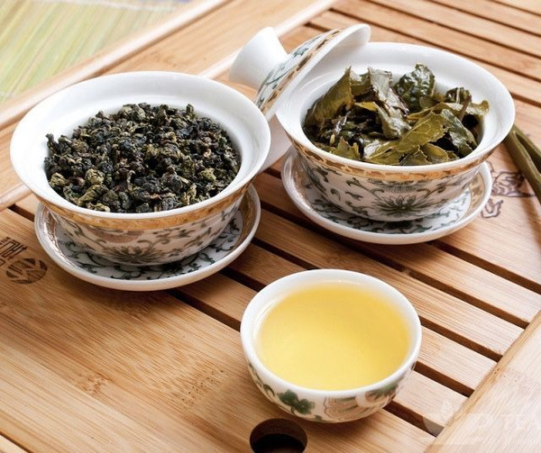

Черный чай
Основное различие между чёрным и зелёным чаем заключается в методе обработки листьев после сбора
Чёрный чай производится из листьев Camellia sinensis, которые проходят процесс окисления (ферментации)
Это придаёт черному чаю характерный насыщенный вкус и аромат, а также тёмный цвет
Зелёный чай,напротив, минимально ферментирован
Листья зелёного чая подвергаются тепловой обработке, которая останавливает окислительные процессы, что
сохраняет их зелёную окраску и естественный вкус

| пуэр | улун | да хун пао |
|  |  |